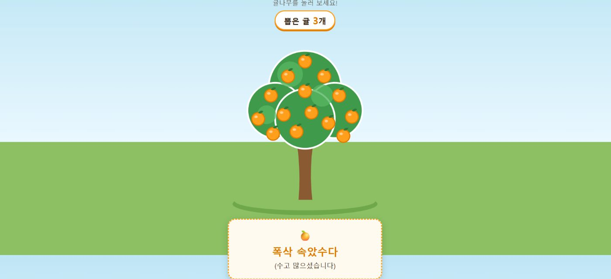
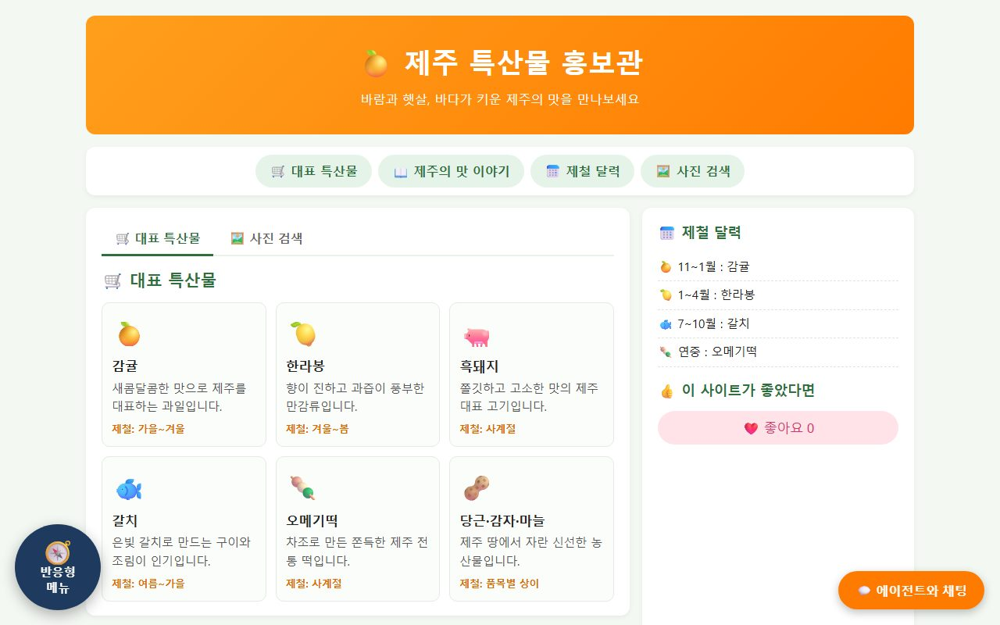
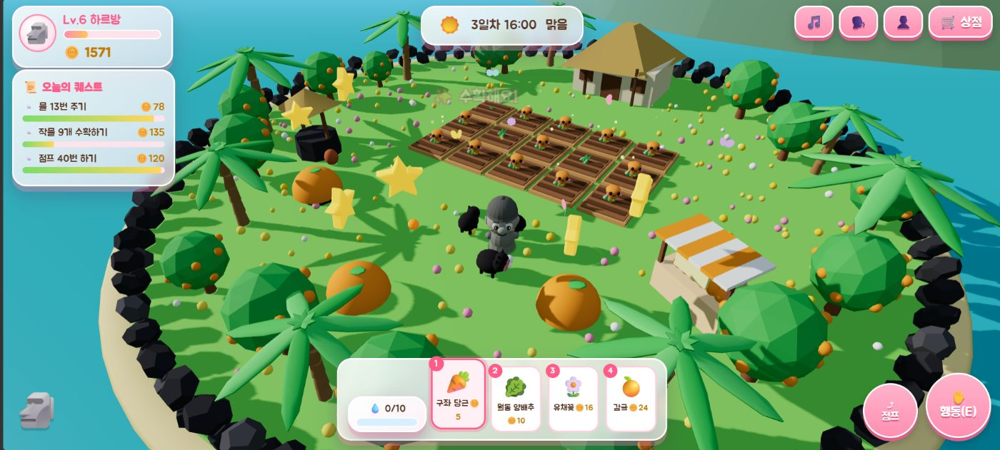
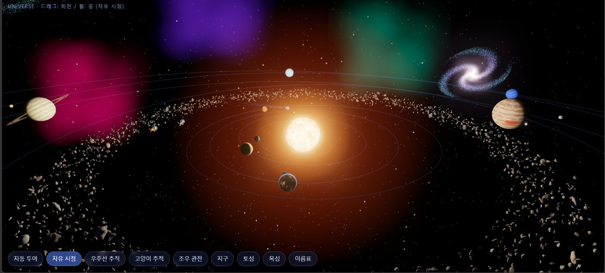
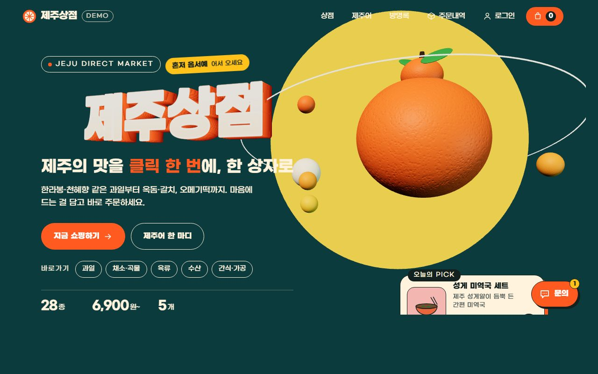
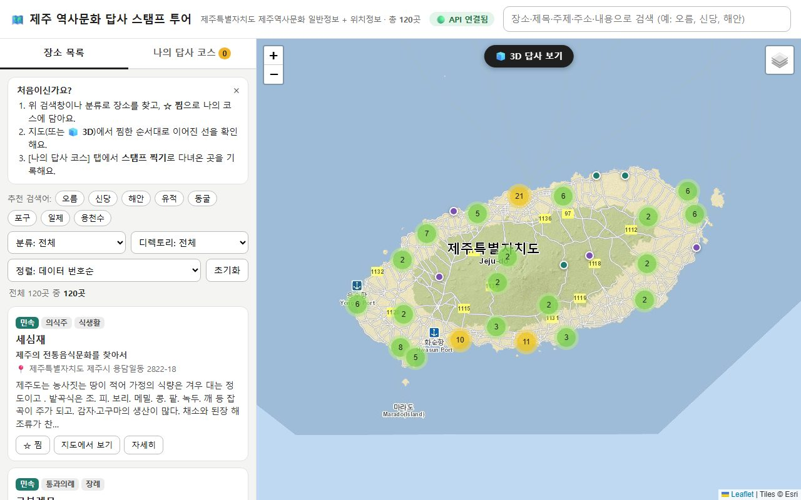
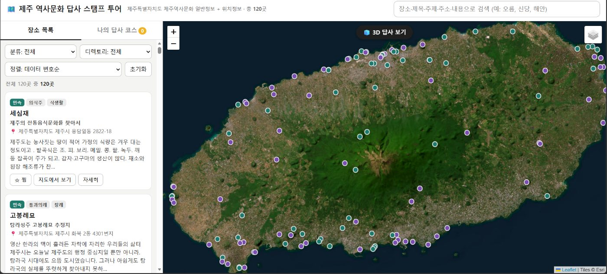
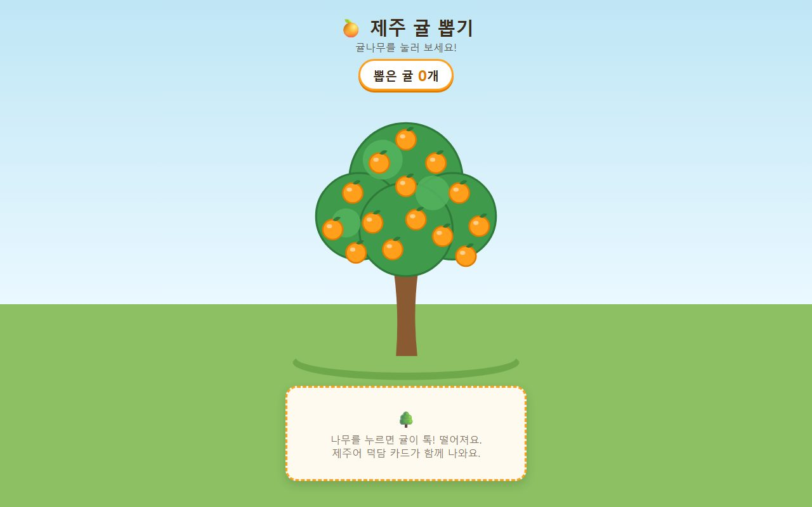
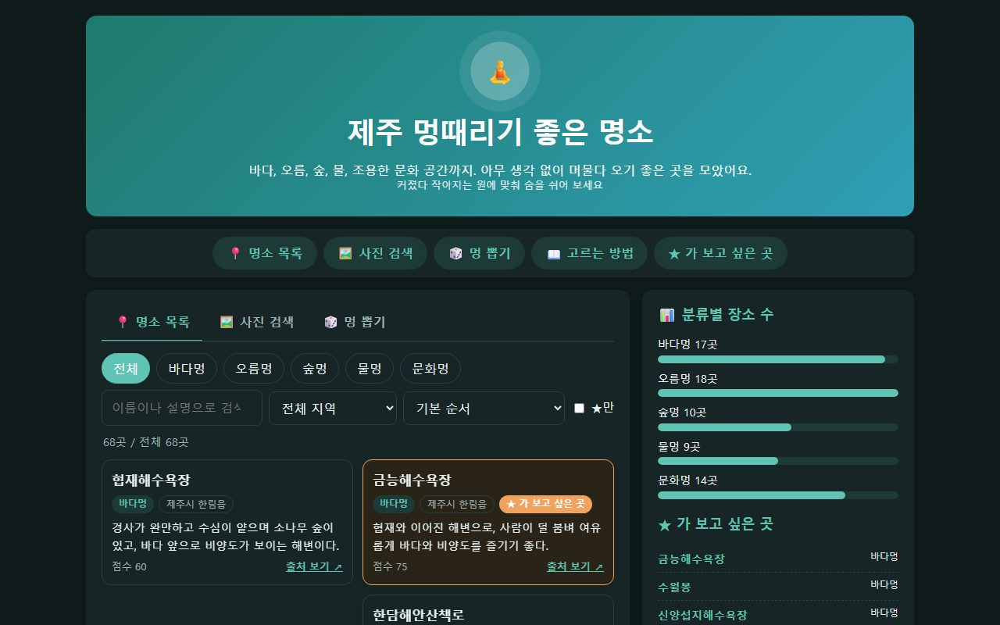
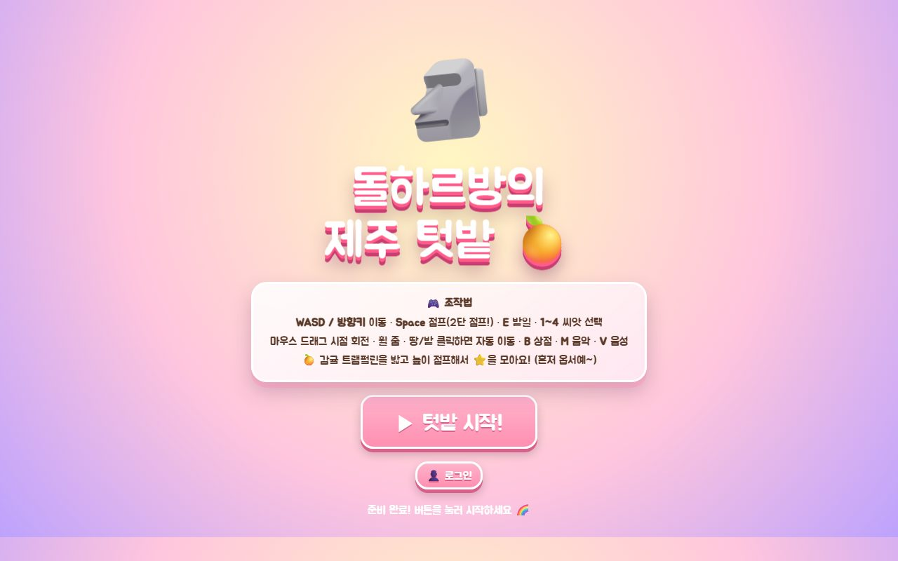

DAY 1 · 배포 완료 · 커밋 2회
제주 귤 뽑기
귤나무를 누르면 귤이 떨어지고 제주어 덕담 카드가 나오는 첫 웹페이지예요. 처음으로 GitHub에 올리고 Vercel로 배포했어요.
HTMLCSSJavaScriptGitHubVercel
제주대학교 AI콘텐츠 부트캠프 1기 · 2026
날씨를 보고 서귀포 관광지를 골라 주는 AI 에이전트 ‘서귀포 길잡이’와 제주 특산품을 담고 주문하는 ‘제주상점’ 쇼핑몰이에요. API 키가 없으면 규칙 기반으로, 키가 있으면 Claude가 답하고, Vercel 서버리스 함수에서 키를 환경변수로만 읽어요. 쇼핑몰은 Supabase에 연결돼 상품 · 회원가입 · 장바구니 · 주문 · 방명록이 DB에 저장되고(행 단위 보안 적용), 결제는 체험 결제예요.

DAY 1 · 배포 완료 · 커밋 2회
귤나무를 누르면 귤이 떨어지고 제주어 덕담 카드가 나오는 첫 웹페이지예요. 처음으로 GitHub에 올리고 Vercel로 배포했어요.

DAY 2 · 배포 완료 · 커밋 24회
특산물 홍보 페이지와 에이전트 '제주 특산물 길잡이'의 채팅 화면이에요. Pixabay 사진 검색, 날씨 · 거리 · 제철 특산물 스킬이 실제로 동작해요.

DAY 3 · 배포 완료
바다 · 오름 · 숲 · 물 · 문화 68곳을 분류 · 지역 · 검색으로 찾는 과제 페이지예요. GitHub 저장소(jeju_spots_project, 비공개)와 연결돼 있고, vibe 실습 모음에도 들어 있어요.

DAY 4 · 배포 완료 · 커밋 14회
단계별 프롬프트로 완성한 3D 텃밭 게임이에요. Supabase로 진행 상황을 클라우드에 저장하고, 로그인과 장바구니 결제 흐름을 붙였어요.


DAY 5 · 배포 완료 · 커밋 19회
제주 특산품 쇼핑몰 '제주상점'과, 날씨를 보고 서귀포 관광지를 골라 주는 AI 에이전트 '서귀포 길잡이'(/guide.html)예요. 쇼핑몰은 Supabase에 연결돼 상품 · 회원가입 · 장바구니 · 주문 · 방명록이 DB에 저장되고(행 단위 보안 적용), 결제는 체험 결제예요. Claude API 키는 서버리스 함수의 환경변수로만 읽어요.

DAY 5 · 배포 완료 · 커밋 6회
제주 역사문화 공공데이터로 장소를 찾고 지도 · 3D로 본 뒤, 찜한 곳으로 답사 코스를 만들어 스탬프를 찍어요. 공공데이터 키는 서버리스 함수에서만 써요.

DAY 5 · 배포 완료
제주 역사문화 공공데이터(CSV)를 페이지 안에 담아 지도 · 3D로 보고 스탬프를 찍는 1단계 제출본이에요. 2단계에서 서버리스 API로 발전시켰어요.

바이브코딩 기초 · AI Agent 란?
바이브코딩으로 만든 첫 웹페이지 ‘제주 귤 뽑기’예요. 귤나무를 누르면 귤이 떨어지고 제주어 덕담 카드가 나와요. GitHub(study)에 올리고 Vercel로 배포했어요.
결과물 보기 →
UI 구성 · 제주 로컬 IP
‘제주 특산물 홍보관’ 페이지와 내 에이전트 ‘제주 특산물 길잡이’의 채팅 화면 뼈대를 만들었어요. Pixabay API로 사진 슬라이드를 붙이고, GitHub(day2)에 저장해 Vercel로 배포했어요.
결과물 보기 →
브랜딩 · 랜딩페이지
과제 ‘제주 멍때리기 좋은 명소’를 만들어 첫 인터넷 주소로 배포했어요. 바다 · 오름 · 숲 · 물 · 문화 68곳을 분류 · 지역 · 검색으로 찾고, 가 보고 싶은 곳을 모을 수 있어요.
결과물 보기 →
AI 텍스트 · 이미지 추천
단계별 프롬프트(1~9단계)로 3D 게임 ‘돌하르방의 제주 텃밭’을 완성했어요. Blender로 제주 지형 영상(jeju_birth.mp4)도 만들었어요. (Vercel 프로젝트 day4는 배포 주소를 확인하지 못해 링크를 비워 뒀어요)
결과물 보기 →
제주 관광 안내 AI Agent
제주 역사문화 공공데이터를 활용해 장소를 찾고, 3D로 보여주는 답사 코스 ‘답사 스탬프 투어’ 과제를 제출했습니다. 또 같은 날 날씨에 따라 서귀포 관광지를 추천하는 ‘서귀포 길잡이’와 ‘제주상점’ 쇼핑몰도 배포했습니다.
결과물 보기 →